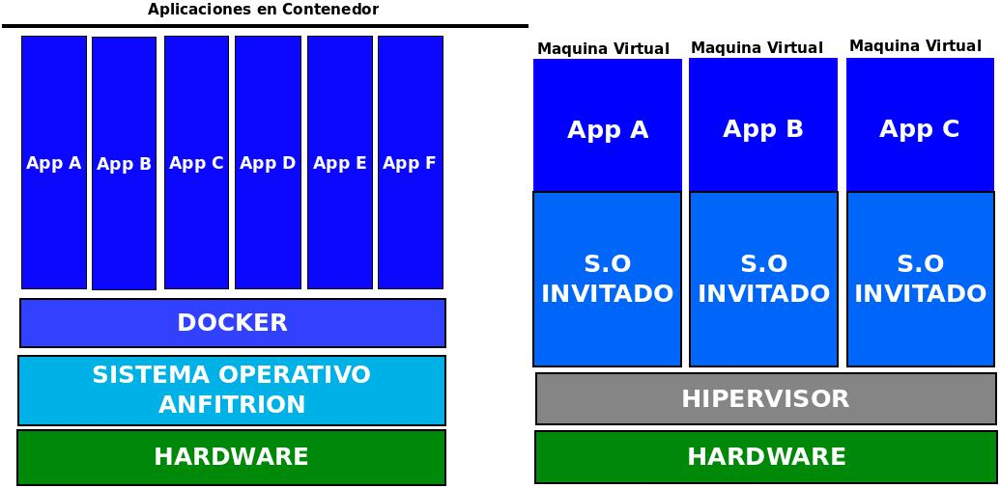

Docker es un subsistema de virtualización que comparte con el anfitrión el kernel y el sistema de archivos. El anfitrión siempre es un sistema Linux. Si estamos en Windows o Mac, necesitaré una máquina virtual Linux virtualizada con VirtualBox o similar.
Un software de máquinas virtuales necesita instalar el S.O completo. Ejemplos de sistemas de virtualizaciónl:
Un SoftWare de contenedores es un sistema de virtualización que comparte el kernel con el anfitrión. Se basa en el concepto de microservicio, donde tengo todos los programas instalados, configurados y funcionando, gracias a los contenedores. Ejemplo de SoftWare de contenedores:

Para saber mas sobre el tema:
Un Dockerfile es una receta para crear una imagen para una aplicación particular de Docker. De este modo podemos tomar una imagen base, instalarle programas, configurar esos programas y dejarla preparada para crear contenedores a partir de ella.